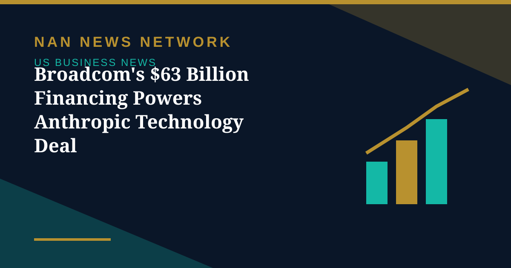
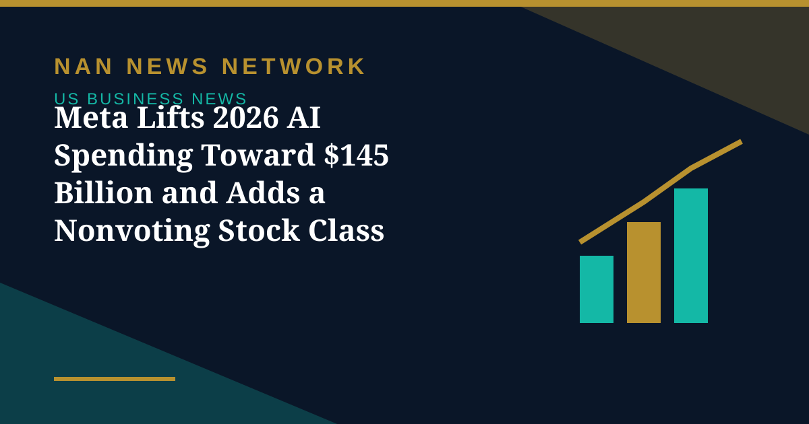
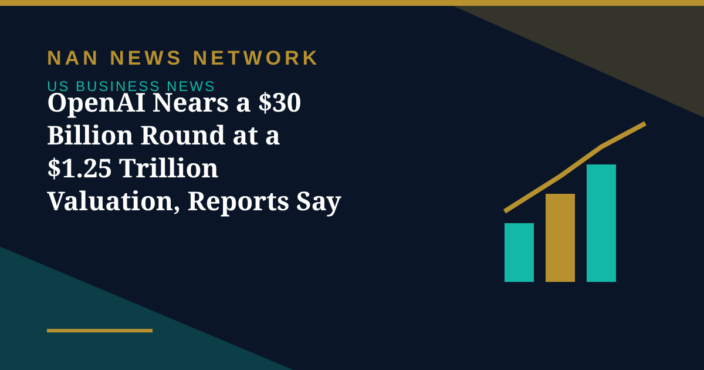
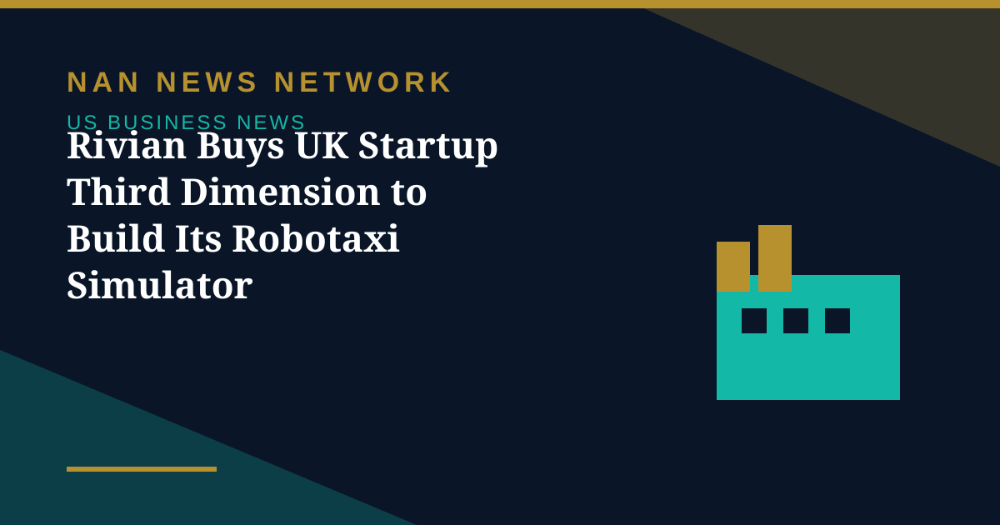

Markets
Anthropic IPO Filing Lifts Stocks as Wall Street Rallies
US stocks rose Monday after Anthropic filed to go public, with the S&P 500 closing up 0.7 percent and the Nasdaq gaining 0.8 percent ahead of the Fed's decision.
United States • Business
Markets, deals and the money moving America.
US stocks rose Monday after Anthropic filed to go public, with the S&P 500 closing up 0.7 percent and the Nasdaq gaining 0.8 percent ahead of the Fed's decision.
US stocks rose Monday after Anthropic filed to go public, with the S&P 500 closing up 0.7 percent and the Nasdaq gaining 0.8 percent ahead of the Fed's decision.

A group of banks and Blackstone announced $63 billion in financing for the purchase of Broadcom technology for Anthropic, lifting chip stocks across the board.
Stocks slipped Friday as Brent crude settled at $116.72 and the 10-year yield closed at 5 percent, setting up a pivotal week with a Fed decision and big tech earnings.
Trend-following hedge funds just had their worst week in two years, Goldman Sachs told clients, as concern about the payoff from heavy AI spending ignited volatility across stocks and bonds.

Meta narrowed its 2026 capital spending outlook to $135–145 billion and unveiled nonvoting Class C shares to fund its AI push — then watched its stock fall more than 7%.

Reports say OpenAI is close to finalizing up to $30 billion in new funding led by Coatue and UAE investors — a deal that would make it the most valuable private company ever, if it closes on those terms.

Rivian has acquired Third Dimension AI, whose platform turns real-world footage into controllable 3D worlds, to accelerate driver assistance and its planned robotaxis for Uber.